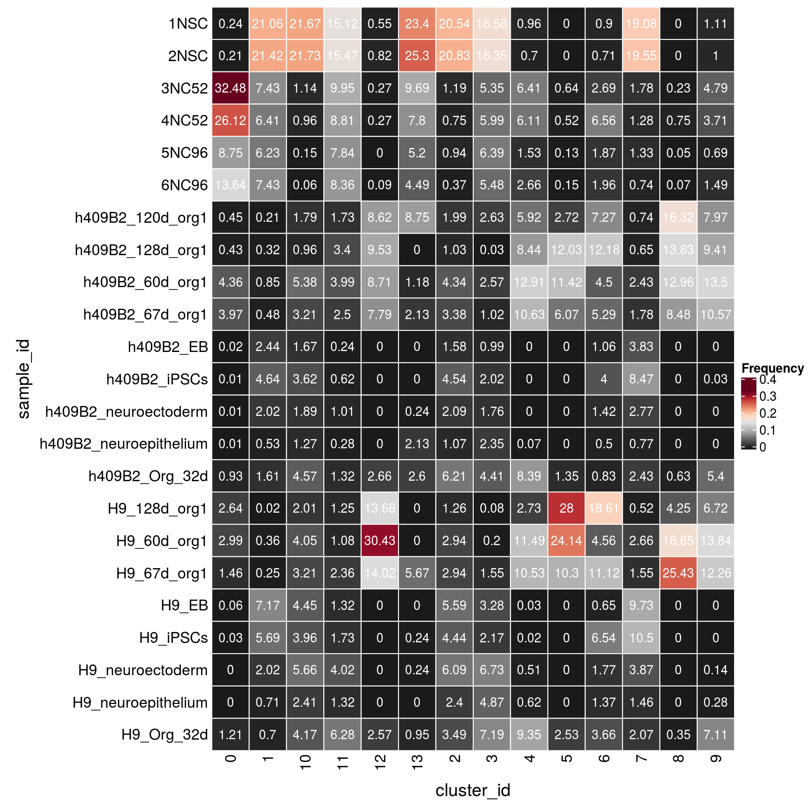

Organoid Stage integration cluster analysis
Katharina Hembach
9/18/2020
Last updated: 2020-09-21
Checks: 6 1
Knit directory: neural_scRNAseq/
This reproducible R Markdown analysis was created with workflowr (version 1.6.2). The Checks tab describes the reproducibility checks that were applied when the results were created. The Past versions tab lists the development history.
Great! Since the R Markdown file has been committed to the Git repository, you know the exact version of the code that produced these results.
Great job! The global environment was empty. Objects defined in the global environment can affect the analysis in your R Markdown file in unknown ways. For reproduciblity it's best to always run the code in an empty environment.
The command set.seed(20200522) was run prior to running the code in the R Markdown file. Setting a seed ensures that any results that rely on randomness, e.g. subsampling or permutations, are reproducible.
Great job! Recording the operating system, R version, and package versions is critical for reproducibility.
- cluster-before-after-organoid-integration
- integration-dim-red
- load-data
- load-libs
- scran-findMarkers
- scran-markers-heatmap
- session-info-chunk-inserted-by-workflowr
- unnamed-chunk-1
- unnamed-chunk-2
- unnamed-chunk-3
- unnamed-chunk-4
- unnamed-chunk-5
- unnamed-chunk-6
- unnamed-chunk-7
To ensure reproducibility of the results, delete the cache directory organoid-05-stage_integration_cluster_analysis_cache and re-run the analysis. To have workflowr automatically delete the cache directory prior to building the file, set delete_cache = TRUE when running wflow_build() or wflow_publish().
Great job! Using relative paths to the files within your workflowr project makes it easier to run your code on other machines.
Great! You are using Git for version control. Tracking code development and connecting the code version to the results is critical for reproducibility.
The results in this page were generated with repository version 6d64ace. See the Past versions tab to see a history of the changes made to the R Markdown and HTML files.
Note that you need to be careful to ensure that all relevant files for the analysis have been committed to Git prior to generating the results (you can use wflow_publish or wflow_git_commit). workflowr only checks the R Markdown file, but you know if there are other scripts or data files that it depends on. Below is the status of the Git repository when the results were generated:
Ignored files:
Ignored: .DS_Store
Ignored: .Rhistory
Ignored: .Rproj.user/
Ignored: ._.DS_Store
Ignored: ._Rplots.pdf
Ignored: ._Rplots_largeViz.pdf
Ignored: ._Rplots_separate.pdf
Ignored: .__workflowr.yml
Ignored: ._neural_scRNAseq.Rproj
Ignored: analysis/.DS_Store
Ignored: analysis/.Rhistory
Ignored: analysis/._.DS_Store
Ignored: analysis/._01-preprocessing.Rmd
Ignored: analysis/._01-preprocessing.html
Ignored: analysis/._02.1-SampleQC.Rmd
Ignored: analysis/._03-filtering.Rmd
Ignored: analysis/._04-clustering.Rmd
Ignored: analysis/._04-clustering.knit.md
Ignored: analysis/._04.1-cell_cycle.Rmd
Ignored: analysis/._05-annotation.Rmd
Ignored: analysis/._Lam-0-NSC_no_integration.Rmd
Ignored: analysis/._Lam-01-NSC_integration.Rmd
Ignored: analysis/._Lam-02-NSC_annotation.Rmd
Ignored: analysis/._NSC-1-clustering.Rmd
Ignored: analysis/._NSC-2-annotation.Rmd
Ignored: analysis/.__site.yml
Ignored: analysis/._additional_filtering.Rmd
Ignored: analysis/._additional_filtering_clustering.Rmd
Ignored: analysis/._index.Rmd
Ignored: analysis/._organoid-01-clustering.Rmd
Ignored: analysis/._organoid-02-integration.Rmd
Ignored: analysis/._organoid-03-cluster_analysis.Rmd
Ignored: analysis/._organoid-04-group_integration.Rmd
Ignored: analysis/._organoid-04-stage_integration.Rmd
Ignored: analysis/._organoid-05-group_integration_cluster_analysis.Rmd
Ignored: analysis/._organoid-05-stage_integration_cluster_analysis.Rmd
Ignored: analysis/._organoid-06-1-prepare-sce.Rmd
Ignored: analysis/._organoid-06-conos-analysis-Seurat.Rmd
Ignored: analysis/._organoid-06-conos-analysis-function.Rmd
Ignored: analysis/._organoid-06-conos-analysis.Rmd
Ignored: analysis/._organoid-06-group-integration-conos-analysis.Rmd
Ignored: analysis/._organoid-07-conos-visualization.Rmd
Ignored: analysis/._organoid-07-group-integration-conos-visualization.Rmd
Ignored: analysis/._organoid-08-conos-comparison.Rmd
Ignored: analysis/._organoid-0x-sample_integration.Rmd
Ignored: analysis/01-preprocessing_cache/
Ignored: analysis/02-1-SampleQC_cache/
Ignored: analysis/02-quality_control_cache/
Ignored: analysis/02.1-SampleQC_cache/
Ignored: analysis/03-filtering_cache/
Ignored: analysis/04-clustering_cache/
Ignored: analysis/04.1-cell_cycle_cache/
Ignored: analysis/05-annotation_cache/
Ignored: analysis/Lam-01-NSC_integration_cache/
Ignored: analysis/Lam-02-NSC_annotation_cache/
Ignored: analysis/NSC-1-clustering_cache/
Ignored: analysis/NSC-2-annotation_cache/
Ignored: analysis/additional_filtering_cache/
Ignored: analysis/additional_filtering_clustering_cache/
Ignored: analysis/organoid-01-clustering_cache/
Ignored: analysis/organoid-02-integration_cache/
Ignored: analysis/organoid-03-cluster_analysis_cache/
Ignored: analysis/organoid-04-group_integration_cache/
Ignored: analysis/organoid-04-stage_integration_cache/
Ignored: analysis/organoid-05-group_integration_cluster_analysis_cache/
Ignored: analysis/organoid-05-stage_integration_cluster_analysis_cache/
Ignored: analysis/organoid-06-conos-analysis_cache/
Ignored: analysis/organoid-06-conos-analysis_test_cache/
Ignored: analysis/organoid-06-group-integration-conos-analysis_cache/
Ignored: analysis/organoid-07-conos-visualization_cache/
Ignored: analysis/organoid-07-group-integration-conos-visualization_cache/
Ignored: analysis/organoid-08-conos-comparison_cache/
Ignored: analysis/organoid-0x-sample_integration_cache/
Ignored: analysis/sample5_QC_cache/
Ignored: data/.DS_Store
Ignored: data/._.DS_Store
Ignored: data/._.smbdeleteAAA17ed8b4b
Ignored: data/._Lam_figure2_markers.R
Ignored: data/._known_NSC_markers.R
Ignored: data/._known_cell_type_markers.R
Ignored: data/._metadata.csv
Ignored: data/data_sushi/
Ignored: data/filtered_feature_matrices/
Ignored: output/.DS_Store
Ignored: output/._.DS_Store
Ignored: output/._NSC_cluster1_marker_genes.txt
Ignored: output/._organoid_integration_cluster1_marker_genes.txt
Ignored: output/Lam-01-clustering.rds
Ignored: output/NSC_1_clustering.rds
Ignored: output/NSC_cluster1_marker_genes.txt
Ignored: output/NSC_cluster2_marker_genes.txt
Ignored: output/NSC_cluster3_marker_genes.txt
Ignored: output/NSC_cluster4_marker_genes.txt
Ignored: output/NSC_cluster5_marker_genes.txt
Ignored: output/NSC_cluster6_marker_genes.txt
Ignored: output/NSC_cluster7_marker_genes.txt
Ignored: output/additional_filtering.rds
Ignored: output/conos/
Ignored: output/conos_organoid-06-conos-analysis.rds
Ignored: output/conos_organoid-06-group-integration-conos-analysis.rds
Ignored: output/figures/
Ignored: output/organoid_integration_cluster10_marker_genes.txt
Ignored: output/organoid_integration_cluster11_marker_genes.txt
Ignored: output/organoid_integration_cluster12_marker_genes.txt
Ignored: output/organoid_integration_cluster13_marker_genes.txt
Ignored: output/organoid_integration_cluster14_marker_genes.txt
Ignored: output/organoid_integration_cluster15_marker_genes.txt
Ignored: output/organoid_integration_cluster16_marker_genes.txt
Ignored: output/organoid_integration_cluster17_marker_genes.txt
Ignored: output/organoid_integration_cluster1_marker_genes.txt
Ignored: output/organoid_integration_cluster2_marker_genes.txt
Ignored: output/organoid_integration_cluster3_marker_genes.txt
Ignored: output/organoid_integration_cluster4_marker_genes.txt
Ignored: output/organoid_integration_cluster5_marker_genes.txt
Ignored: output/organoid_integration_cluster6_marker_genes.txt
Ignored: output/organoid_integration_cluster7_marker_genes.txt
Ignored: output/organoid_integration_cluster8_marker_genes.txt
Ignored: output/organoid_integration_cluster9_marker_genes.txt
Ignored: output/sce_01_preprocessing.rds
Ignored: output/sce_02_quality_control.rds
Ignored: output/sce_03_filtering.rds
Ignored: output/sce_03_filtering_all_genes.rds
Ignored: output/sce_06-1-prepare-sce.rds
Ignored: output/sce_organoid-01-clustering.rds
Ignored: output/sce_preprocessing.rds
Ignored: output/so_04-group_integration.rds
Ignored: output/so_04-stage_integration.rds
Ignored: output/so_04_1_cell_cycle.rds
Ignored: output/so_04_clustering.rds
Ignored: output/so_0x-sample_integration.rds
Ignored: output/so_additional_filtering_clustering.rds
Ignored: output/so_integrated_organoid-02-integration.rds
Ignored: output/so_merged_organoid-02-integration.rds
Ignored: output/so_organoid-01-clustering.rds
Ignored: output/so_sample_organoid-01-clustering.rds
Untracked files:
Untracked: Rplots.pdf
Untracked: Rplots_largeViz.pdf
Untracked: Rplots_separate.pdf
Untracked: analysis/Lam-0-NSC_no_integration.Rmd
Untracked: analysis/additional_filtering.Rmd
Untracked: analysis/additional_filtering_clustering.Rmd
Untracked: analysis/organoid-06-conos-analysis-Seurat.Rmd
Untracked: analysis/organoid-06-conos-analysis-function.Rmd
Untracked: analysis/organoid-07-conos-visualization.Rmd
Untracked: analysis/organoid-07-group-integration-conos-visualization.Rmd
Untracked: analysis/organoid-08-conos-comparison.Rmd
Untracked: analysis/organoid-0x-sample_integration.Rmd
Untracked: analysis/sample5_QC.Rmd
Untracked: data/Homo_sapiens.GRCh38.98.sorted.gtf
Untracked: data/Kanton_et_al/
Untracked: data/Lam_et_al/
Untracked: scripts/
Unstaged changes:
Modified: analysis/05-annotation.Rmd
Modified: analysis/Lam-02-NSC_annotation.Rmd
Modified: analysis/_site.yml
Modified: analysis/organoid-02-integration.Rmd
Modified: analysis/organoid-04-group_integration.Rmd
Modified: analysis/organoid-06-conos-analysis.Rmd
Note that any generated files, e.g. HTML, png, CSS, etc., are not included in this status report because it is ok for generated content to have uncommitted changes.
These are the previous versions of the repository in which changes were made to the R Markdown (analysis/organoid-05-stage_integration_cluster_analysis.Rmd) and HTML (docs/organoid-05-stage_integration_cluster_analysis.html) files. If you've configured a remote Git repository (see ?wflow_git_remote), click on the hyperlinks in the table below to view the files as they were in that past version.
| File | Version | Author | Date | Message |
|---|---|---|---|---|
| Rmd | 6d64ace | khembach | 2020-09-21 | fix factor levels |
| html | ff520ae | khembach | 2020-09-20 | Build site. |
| Rmd | f91df7b | khembach | 2020-09-20 | cluster abundances of cell line and stage integration |
Load packages
library(ComplexHeatmap)
library(cowplot)
library(ggplot2)
library(dplyr)
library(muscat)
library(RColorBrewer)
library(Seurat)
library(SingleCellExperiment)
library(scran)
library(stringr)
library(viridis)Load data & convert to SCE
so <- readRDS(file.path("output", "so_04-stage_integration.rds"))
sce <- as.SingleCellExperiment(so, assay = "RNA")
colData(sce) <- as.data.frame(colData(sce)) %>%
mutate_if(is.character, as.factor) %>%
DataFrame(row.names = colnames(sce))Cluster-sample counts
# set cluster IDs to resolution 0.4 clustering
so <- SetIdent(so, value = "integrated_snn_res.0.4")
so@meta.data$cluster_id <- Idents(so)
sce$cluster_id <- Idents(so)
(n_cells <- table(sce$cluster_id, sce$sample_id))
1NSC 2NSC 3NC52 4NC52 5NC96 6NC96 h409B2_120d_org1 h409B2_128d_org1
0 44 38 5980 4810 1611 2512 82 79
1 3130 3184 1105 952 926 1105 31 48
10 701 703 37 31 5 2 58 31
11 436 446 287 254 226 241 50 98
12 6 9 3 3 0 1 94 104
13 99 107 41 33 22 19 37 0
2 1922 1949 111 70 88 35 186 96
3 1007 993 325 364 388 333 160 2
4 56 41 374 356 89 155 345 492
5 0 0 33 27 7 8 141 624
6 43 34 129 315 90 94 349 585
7 847 868 79 57 59 33 33 29
8 0 0 10 32 2 3 699 592
9 40 36 173 134 25 54 288 340
h409B2_60d_org1 h409B2_67d_org1 h409B2_EB h409B2_iPSCs
0 803 731 3 1
1 126 72 362 690
10 174 104 54 117
11 115 72 7 18
12 95 85 0 0
13 5 9 0 0
2 406 316 148 425
3 156 62 60 123
4 753 620 0 0
5 592 315 0 0
6 216 254 51 192
7 108 79 170 376
8 555 363 0 0
9 488 382 0 1
h409B2_neuroectoderm h409B2_neuroepithelium h409B2_Org_32d H9_128d_org1
0 1 1 172 486
1 300 79 240 3
10 61 41 148 65
11 29 8 38 36
12 0 0 29 149
13 1 9 11 0
2 196 100 581 118
3 107 143 268 5
4 0 4 489 159
5 0 0 70 1452
6 68 24 40 894
7 123 34 108 23
8 0 0 27 182
9 0 0 195 243
H9_60d_org1 H9_67d_org1 H9_EB H9_iPSCs H9_neuroectoderm H9_neuroepithelium
0 551 269 11 5 0 0
1 53 37 1065 845 300 106
10 131 104 144 128 183 78
11 31 68 38 50 116 38
12 332 153 0 0 0 0
13 0 24 0 1 1 0
2 275 275 523 415 570 225
3 12 94 199 132 409 296
4 670 614 2 1 30 36
5 1252 534 0 0 0 0
6 219 534 31 314 85 66
7 118 69 432 466 172 65
8 713 1089 0 0 0 0
9 500 443 0 0 5 10
H9_Org_32d
0 222
1 104
10 135
11 181
12 28
13 4
2 327
3 437
4 545
5 131
6 176
7 92
8 15
9 257Relative cluster-abundances
fqs <- prop.table(n_cells, margin = 2)
mat <- as.matrix(unclass(fqs))
Heatmap(mat,
col = rev(brewer.pal(11, "RdGy")[-6]),
name = "Frequency",
cluster_rows = FALSE,
cluster_columns = FALSE,
row_names_side = "left",
row_title = "cluster_id",
column_title = "sample_id",
column_title_side = "bottom",
rect_gp = gpar(col = "white"),
cell_fun = function(i, j, x, y, width, height, fill)
grid.text(round(mat[j, i] * 100, 2), x = x, y = y,
gp = gpar(col = "white", fontsize = 10)))n_cells <- table(sce$sample_id, sce$cluster_id)
fqs <- prop.table(n_cells, margin = 2)
mat <- as.matrix(unclass(fqs))
Heatmap(mat,
col = rev(brewer.pal(11, "RdGy")[-6]),
name = "Frequency",
cluster_rows = FALSE,
cluster_columns = FALSE,
row_names_side = "left",
row_title = "sample_id",
column_title = "cluster_id",
column_title_side = "bottom",
rect_gp = gpar(col = "white"),
cell_fun = function(i, j, x, y, width, height, fill)
grid.text(round(mat[j, i] * 100, 2), x = x, y = y,
gp = gpar(col = "white", fontsize = 10)))
(n_cells_group <- table(sce$cluster_id, sce$group_id))
P22 D52 D96 H9 409b2
0 82 10790 4123 1544 1873
1 6314 2057 2031 2513 1948
10 1404 68 7 968 788
11 882 541 467 558 435
12 15 6 1 662 407
13 206 74 41 30 72
2 3871 181 123 2728 2454
3 2000 689 721 1584 1081
4 97 730 244 2057 2703
5 0 60 15 3369 1742
6 77 444 184 2319 1779
7 1715 136 92 1437 1060
8 0 42 5 1999 2236
9 76 307 79 1458 1694fqs <- prop.table(n_cells_group, margin = 2)
mat <- as.matrix(unclass(fqs))
Heatmap(mat,
col = rev(brewer.pal(11, "RdGy")[-6]),
name = "Frequency",
cluster_rows = FALSE,
cluster_columns = FALSE,
row_names_side = "left",
row_title = "cluster_id",
column_title = "group_id",
column_title_side = "bottom",
rect_gp = gpar(col = "white"),
cell_fun = function(i, j, x, y, width, height, fill)
grid.text(round(mat[j, i] * 100, 2), x = x, y = y,
gp = gpar(col = "white", fontsize = 10)))
(n_cells_group <- table(sce$cluster_id, sce$Stage))
P22 D52 D96 iPSCs EB Neuroectoderm Neuroepithelium Organoid-1M
0 82 10790 4123 6 14 1 1 394
1 6314 2057 2031 1535 1427 600 185 344
10 1404 68 7 245 198 244 119 283
11 882 541 467 68 45 145 46 219
12 15 6 1 0 0 0 0 57
13 206 74 41 1 0 2 9 15
2 3871 181 123 840 671 766 325 908
3 2000 689 721 255 259 516 439 705
4 97 730 244 1 2 30 40 1034
5 0 60 15 0 0 0 0 201
6 77 444 184 506 82 153 90 216
7 1715 136 92 842 602 295 99 200
8 0 42 5 0 0 0 0 42
9 76 307 79 1 0 5 10 452
Organoid-2M Organoid-4M
0 2354 647
1 288 82
10 513 154
11 286 184
12 665 347
13 38 37
2 1272 400
3 324 167
4 2657 996
5 2693 2217
6 1223 1828
7 374 85
8 2720 1473
9 1813 871fqs <- prop.table(n_cells_group, margin = 2)
mat <- as.matrix(unclass(fqs))
Heatmap(mat,
col = rev(brewer.pal(11, "RdGy")[-6]),
name = "Frequency",
cluster_rows = FALSE,
cluster_columns = FALSE,
row_names_side = "left",
row_title = "cluster_id",
column_title = "Stage",
column_title_side = "bottom",
rect_gp = gpar(col = "white"),
cell_fun = function(i, j, x, y, width, height, fill)
grid.text(round(mat[j, i] * 100, 2), x = x, y = y,
gp = gpar(col = "white", fontsize = 10)))
| Version | Author | Date |
|---|---|---|
| ff520ae | khembach | 2020-09-20 |
n_cells_lineage <- table(sce$cluster_id, sce$cl_FullLineage)
fqs <- prop.table(n_cells_lineage, margin = 2)
mat <- as.matrix(unclass(fqs))
cn <- colnames(mat)
Heatmap(mat,
col = rev(brewer.pal(11, "RdGy")[-6]),
name = "Frequency",
cluster_rows = FALSE,
cluster_columns = FALSE,
show_column_names = FALSE,
row_names_side = "left",
row_title = "cluster_id",
column_title = "cl_FullLineage",
column_title_side = "bottom",
rect_gp = gpar(col = "white"),
cell_fun = function(i, j, x, y, width, height, fill)
grid.text(round(mat[j, i] * 100, 1), x = x, y = y,
gp = gpar(col = "white", fontsize = 10)),
bottom_annotation = HeatmapAnnotation(
text = anno_text(cn, rot = 80, just = "right")))
n_cells_lineage <- table(sce$cl_FullLineage, sce$cluster_id)
fqs <- prop.table(n_cells_lineage, margin = 2)
mat <- as.matrix(unclass(fqs))
Heatmap(mat,
col = rev(brewer.pal(11, "RdGy")[-6]),
name = "Frequency",
cluster_rows = FALSE,
cluster_columns = FALSE,
row_names_side = "left",
row_title = "cl_FullLineage",
row_names_rot = 10,
column_title = "cluster_id",
column_title_side = "bottom",
rect_gp = gpar(col = "white"),
cell_fun = function(i, j, x, y, width, height, fill)
grid.text(round(mat[j, i] * 100, 1), x = x, y = y,
gp = gpar(col = "white", fontsize = 10)))Evaluation of cluster before and after integration
We evaluate if cells which were together in a cluster before the integration of the organoid cells are still in the same cluster after integration.
## Load the Seurat object from the integrated analysis of our 6 samples
so_before <- readRDS(file.path("output", "so_04_clustering.rds"))
so_before <- SetIdent(so_before, value = "integrated_snn_res.0.4")
so_before@meta.data$cluster_id <- Idents(so_before)
table(so_before@meta.data$cluster_id)
0 1 2 3 4 5 6 7 8 9 10 11 12
11194 3938 2856 2763 2608 2481 2467 2332 1948 1870 1340 1328 1176
13 14 15 16
976 915 488 317 ## subset to our cells
cs <- which(so@meta.data$integration_group %in% c("P22", "D52", "D96"))
sub <- subset(so, cells = cs)
table(sub@meta.data$cluster_id)
0 1 10 11 12 13 2 3 4 5 6 7 8
14995 10402 1479 1890 22 321 4175 3410 1071 75 705 1943 47
9
462 ## join the cluster_ids from both clustering runs
before <- data.frame(cell = colnames(so_before),
cluster_before = so_before@meta.data[,c("cluster_id")])
after <- data.frame(cell = colnames(sub),
cluster_after = sub@meta.data[,c("cluster_id")])
clusters <- before %>% full_join(after)
## check if cells from the same cluster are still in the same cluster
(n_clusters <- table(clusters$cluster_after, clusters$cluster_before))
0 1 2 3 4 5 6 7 8 9 10 11 12 13 14
0 70 3703 0 1 0 2129 2280 2189 1 1716 4 105 1057 924 816
1 5978 87 1 639 1972 48 83 36 863 69 160 174 51 22 16
10 99 1 1345 4 0 1 0 1 0 0 26 0 0 0 0
11 100 18 0 31 38 26 17 34 61 20 871 619 15 4 33
12 0 0 21 1 0 0 0 0 0 0 0 0 0 0 0
13 0 0 0 57 0 0 0 0 0 0 0 0 0 0 0
2 2281 34 1297 220 21 24 12 2 49 15 164 22 18 7 6
3 1029 7 12 1628 125 1 2 1 456 7 9 71 9 0 0
4 99 0 0 85 417 0 0 0 457 0 11 1 0 0 0
5 0 7 0 0 0 43 10 12 0 2 0 0 0 1 0
6 48 22 0 22 18 47 27 47 37 23 25 320 16 15 37
7 1446 48 180 48 17 25 34 6 24 17 70 15 4 1 2
8 0 11 0 0 0 23 2 4 0 1 0 0 4 2 0
9 44 0 0 27 0 114 0 0 0 0 0 1 2 0 5
15 16
0 0 0
1 202 1
10 1 1
11 3 0
12 0 0
13 0 264
2 2 1
3 3 50
4 1 0
5 0 0
6 1 0
7 6 0
8 0 0
9 269 0fqs <- prop.table(n_clusters, margin = 2)
mat <- as.matrix(unclass(fqs))
Heatmap(mat,
col = rev(brewer.pal(11, "RdGy")[-6]),
name = "Frequency",
cluster_rows = FALSE,
cluster_columns = FALSE,
row_names_side = "left",
row_title = "clusters after organoid integration",
column_title = "clusters before organoid integration",
column_title_side = "bottom",
rect_gp = gpar(col = "white"),
cell_fun = function(i, j, x, y, width, height, fill)
grid.text(round(mat[j, i] * 100, 2), x = x, y = y,
gp = gpar(col = "white", fontsize = 8)))## add the old cluster identities to the Seurat object
so@meta.data$cluster_id_before <- so_before@meta.data$cluster_id[
match(colnames(so), colnames(so_before))]Dimension reduction plots
so$integration_group <- factor(so$integration_group,
levels = c("P22", "D52", "D96", "iPSCs_409b2", "iPSCs_H9", "EB_409b2",
"EB_H9", "Neuroectoderm_409b2", "Neuroectoderm_H9",
"Neuroepithelium_409b2", "Neuroepithelium_H9",
"Organoid-1M_409b2", "Organoid-1M_H9", "Organoid-2M_409b2",
"Organoid-2M_H9", "Organoid-4M_409b2", "Organoid-4M_H9"))
cs <- sample(colnames(so), 10e3)
.plot_dr <- function(so, dr, id)
DimPlot(so, cells = cs, group.by = id, reduction = dr, pt.size = 0.4) +
guides(col = guide_legend(nrow = 11,
override.aes = list(size = 3, alpha = 1))) +
theme_void() + theme(aspect.ratio = 1)
ids <- c("integration_group", "group_id", "cl_FullLineage", "cluster_id",
"cluster_id_before")
for (id in ids) {
cat("## ", id, "\n")
p1 <- .plot_dr(so, "tsne", id)
lgd <- get_legend(p1)
p1 <- p1 + theme(legend.position = "none")
p2 <- .plot_dr(so, "umap", id) + theme(legend.position = "none")
ps <- plot_grid(plotlist = list(p1, p2), nrow = 1)
p <- plot_grid(ps, lgd, nrow = 1, rel_widths = c(1, 0.5))
print(p)
cat("\n\n")
}Find markers using scran
We identify candidate marker genes for each cluster.
scran_markers <- findMarkers(sce,
groups = sce$cluster_id, block = sce$sample_id,
direction = "up", lfc = 2, full.stats = TRUE)Heatmap of mean marker-exprs. by cluster
We aggregate the cells to pseudobulks and plot the average expression of the candidate marker genes in each of the clusters.
gs <- lapply(scran_markers, function(u) rownames(u)[u$Top == 1])
## candidate cluster markers
lapply(gs, function(x) str_split(x, pattern = "\\.", simplify = TRUE)[,2])$`0`
[1] "SAMD11" "STMN2" "RTN1" "SEZ6L2" "MT-CO3"
$`1`
[1] "SAMD11" "VIM" "CKB" "MT-CO1"
$`10`
[1] "CENPF" "HMGB2" "VIM" "UBE2C"
$`11`
[1] "SAMD11" "PTN" "VIM" "SLC3A2" "CKB"
$`12`
[1] "HES6" "HMGB2" "HIST1H4C" "CKB"
$`13`
[1] "S100A11" "COL3A1" "LGALS1"
$`2`
[1] "SAMD11" "HIST1H4C" "VIM" "CKB" "MT-CO3"
$`3`
[1] "SAMD11" "SPARC" "PTN" "CLU" "VIM" "MT-CO1"
$`4`
[1] "SAMD11" "C1orf61" "FABP7" "VIM" "TTYH1"
$`5`
[1] "SAMD11" "STMN2" "MT-ATP6" "DLX6-AS1"
$`6`
[1] "SAMD11" "IGFBP2" "TUBB2B" "STMN2" "RTN1" "ALDOA"
$`7`
[1] "SAMD11" "HMGB2" "PTTG1" "VIM" "CKB" "MT-CO1"
$`8`
[1] "STMN2" "NFIB" "NEUROD2" "MT-CO3"
$`9`
[1] "HES6" "SOX4" "STMN2" "CKB" sub <- sce[unique(unlist(gs)), ]
pbs <- aggregateData(sub, assay = "logcounts", by = "cluster_id", fun = "mean")
mat <- t(muscat:::.scale(assay(pbs)))
## remove the Ensembl ID from the gene names
colnames(mat) <- str_split(colnames(mat), pattern = "\\.", simplify = TRUE)[,2]
Heatmap(mat,
name = "scaled avg.\nexpression",
col = viridis(10),
cluster_rows = FALSE,
cluster_columns = FALSE,
row_names_side = "left",
row_title = "cluster_id",
rect_gp = gpar(col = "white"))We write tables with the top marker genes per cluster.
gs2 <- lapply(scran_markers, function(u) u[u$Top %in% 1:3,])
for (i in seq_along(gs2)) {
write.table(x = gs2[[i]] %>% as.data.frame %>%
dplyr::mutate(gene = rownames(gs2[[i]])) %>%
dplyr::relocate(gene),
file = file.path("output",
paste0("organoid_integration_cluster", i, "_marker_genes.txt")),
sep = "\t", quote = FALSE, row.names = FALSE)
}Heatmap including marker genes of rank 2 and 3.
gs <- lapply(scran_markers, function(u) rownames(u)[u$Top %in% 1:3])
## candidate cluster markers
lapply(gs, function(x) str_split(x, pattern = "\\.", simplify = TRUE)[,2])$`0`
[1] "SAMD11" "STMN2" "RTN1" "SEZ6L2" "MT-CO3" "NOC2L" "STMN1"
[8] "GAP43" "DCX" "MT-ATP6" "KLHL17" "NSG1" "STMN4" "MT-CO2"
[15] "HMP19"
$`1`
[1] "SAMD11" "VIM" "CKB" "MT-CO1" "NOC2L" "SOX2" "PTN" "CLU"
[9] "TTYH1" "MT-CO2" "KLHL17" "FABP7" "PTPRZ1" "MT-CO3"
$`10`
[1] "CENPF" "HMGB2" "VIM" "UBE2C" "SAMD11" "CCNB1" "PTTG1"
[8] "TOP2A" "NOC2L" "CKB" "ARL6IP1"
$`11`
[1] "SAMD11" "PTN" "VIM" "SLC3A2" "CKB" "NOC2L"
[7] "CLU" "EIF4EBP1" "MT-CO1" "KLHL17" "ENO1" "SOX2"
[13] "TUBB2B" "BNIP3" "DDIT3" "TTYH1" "MT-CO2"
$`12`
[1] "HES6" "HMGB2" "HIST1H4C" "CKB" "HMGN2" "SOX4" "TUBA1B"
[8] "CDK1" "TOP2A"
$`13`
[1] "S100A11" "COL3A1" "LGALS1" "COL1A1" "TAGLN" "TPM1"
$`2`
[1] "SAMD11" "HIST1H4C" "VIM" "CKB" "MT-CO3" "NOC2L"
[7] "HMGB2" "PTN" "MT-CO1" "KLHL17" "SOX2" "FABP7"
[13] "MT-CO2" "KIAA0101"
$`3`
[1] "SAMD11" "SPARC" "PTN" "CLU" "VIM" "MT-CO1" "NOC2L" "HES1"
[9] "CKB" "MT-CO2" "KLHL17" "METRN" "MT-CO3" "TTR"
$`4`
[1] "SAMD11" "C1orf61" "FABP7" "VIM" "TTYH1" "NOC2L" "SOX2"
[8] "PTN" "CKB" "KLHL17"
$`5`
[1] "SAMD11" "STMN2" "MT-ATP6" "DLX6-AS1" "NOC2L" "SOX4"
[7] "RTN1" "DCX" "MT-CO3" "DLX5" "KLHL17" "MLLT11"
[13] "CD24" "MT-CYB" "DLX2"
$`6`
[1] "SAMD11" "IGFBP2" "TUBB2B" "STMN2" "RTN1" "ALDOA" "NOC2L" "ENO1"
[9] "CKB" "DCX" "KLHL17" "GPM6A" "SOX4" "BEX1"
$`7`
[1] "SAMD11" "HMGB2" "PTTG1" "VIM" "CKB" "MT-CO1" "NOC2L" "CENPF"
[9] "PTN" "MT-CO2" "KLHL17" "FABP7" "UBE2S" "MT-CO3"
$`8`
[1] "STMN2" "NFIB" "NEUROD2" "MT-CO3" "NEUROD6" "CSRP2" "RTN1"
[8] "MT-ATP6" "SAMD11" "SOX4" "DCX" "MT-CO1"
$`9`
[1] "HES6" "SOX4" "STMN2" "CKB" "SAMD11" "MLLT11" "FABP7" "VIM"
[9] "MT-CO3" "NOC2L" "SOX11" "MT-CO2"sub <- sce[unique(unlist(gs)), ]
pbs <- aggregateData(sub, assay = "logcounts", by = "cluster_id", fun = "mean")
mat <- t(muscat:::.scale(assay(pbs)))
## remove the Ensembl ID from the gene names
colnames(mat) <- str_split(colnames(mat), pattern = "\\.", simplify = TRUE)[,2]
Heatmap(mat,
name = "scaled avg.\nexpression",
col = viridis(10),
cluster_rows = FALSE,
cluster_columns = FALSE,
row_names_side = "left",
row_title = "cluster_id",
rect_gp = gpar(col = "white"))
sessionInfo()R version 4.0.0 (2020-04-24)
Platform: x86_64-pc-linux-gnu (64-bit)
Running under: Ubuntu 16.04.6 LTS
Matrix products: default
BLAS: /usr/local/R/R-4.0.0/lib/libRblas.so
LAPACK: /usr/local/R/R-4.0.0/lib/libRlapack.so
locale:
[1] LC_CTYPE=en_US.UTF-8 LC_NUMERIC=C
[3] LC_TIME=en_US.UTF-8 LC_COLLATE=en_US.UTF-8
[5] LC_MONETARY=en_US.UTF-8 LC_MESSAGES=en_US.UTF-8
[7] LC_PAPER=en_US.UTF-8 LC_NAME=C
[9] LC_ADDRESS=C LC_TELEPHONE=C
[11] LC_MEASUREMENT=en_US.UTF-8 LC_IDENTIFICATION=C
attached base packages:
[1] parallel stats4 grid stats graphics grDevices utils
[8] datasets methods base
other attached packages:
[1] viridis_0.5.1 viridisLite_0.3.0
[3] stringr_1.4.0 scran_1.16.0
[5] SingleCellExperiment_1.10.1 SummarizedExperiment_1.18.1
[7] DelayedArray_0.14.0 matrixStats_0.56.0
[9] Biobase_2.48.0 GenomicRanges_1.40.0
[11] GenomeInfoDb_1.24.2 IRanges_2.22.2
[13] S4Vectors_0.26.1 BiocGenerics_0.34.0
[15] Seurat_3.1.5 RColorBrewer_1.1-2
[17] muscat_1.2.1 dplyr_1.0.2
[19] ggplot2_3.3.2 cowplot_1.0.0
[21] ComplexHeatmap_2.4.2 workflowr_1.6.2
loaded via a namespace (and not attached):
[1] backports_1.1.9 circlize_0.4.10
[3] blme_1.0-4 igraph_1.2.5
[5] plyr_1.8.6 lazyeval_0.2.2
[7] TMB_1.7.16 splines_4.0.0
[9] BiocParallel_1.22.0 listenv_0.8.0
[11] scater_1.16.2 digest_0.6.25
[13] foreach_1.5.0 htmltools_0.5.0
[15] gdata_2.18.0 lmerTest_3.1-2
[17] magrittr_1.5 memoise_1.1.0
[19] cluster_2.1.0 doParallel_1.0.15
[21] ROCR_1.0-11 limma_3.44.3
[23] globals_0.12.5 annotate_1.66.0
[25] prettyunits_1.1.1 colorspace_1.4-1
[27] rappdirs_0.3.1 ggrepel_0.8.2
[29] blob_1.2.1 xfun_0.15
[31] jsonlite_1.7.0 crayon_1.3.4
[33] RCurl_1.98-1.2 genefilter_1.70.0
[35] lme4_1.1-23 zoo_1.8-8
[37] ape_5.4 survival_3.2-3
[39] iterators_1.0.12 glue_1.4.2
[41] gtable_0.3.0 zlibbioc_1.34.0
[43] XVector_0.28.0 leiden_0.3.3
[45] GetoptLong_1.0.1 BiocSingular_1.4.0
[47] future.apply_1.6.0 shape_1.4.4
[49] scales_1.1.1 DBI_1.1.0
[51] edgeR_3.30.3 Rcpp_1.0.5
[53] xtable_1.8-4 progress_1.2.2
[55] clue_0.3-57 dqrng_0.2.1
[57] reticulate_1.16 bit_1.1-15.2
[59] rsvd_1.0.3 tsne_0.1-3
[61] htmlwidgets_1.5.1 httr_1.4.1
[63] gplots_3.0.4 ellipsis_0.3.1
[65] ica_1.0-2 farver_2.0.3
[67] pkgconfig_2.0.3 XML_3.99-0.4
[69] uwot_0.1.8 locfit_1.5-9.4
[71] labeling_0.3 tidyselect_1.1.0
[73] rlang_0.4.7 reshape2_1.4.4
[75] later_1.1.0.1 AnnotationDbi_1.50.1
[77] munsell_0.5.0 tools_4.0.0
[79] generics_0.0.2 RSQLite_2.2.0
[81] ggridges_0.5.2 evaluate_0.14
[83] yaml_2.2.1 knitr_1.29
[85] bit64_0.9-7 fs_1.4.2
[87] fitdistrplus_1.1-1 caTools_1.18.0
[89] RANN_2.6.1 purrr_0.3.4
[91] pbapply_1.4-2 future_1.17.0
[93] nlme_3.1-148 whisker_0.4
[95] pbkrtest_0.4-8.6 compiler_4.0.0
[97] plotly_4.9.2.1 beeswarm_0.2.3
[99] png_0.1-7 variancePartition_1.18.2
[101] tibble_3.0.3 statmod_1.4.34
[103] geneplotter_1.66.0 stringi_1.4.6
[105] lattice_0.20-41 Matrix_1.2-18
[107] nloptr_1.2.2.2 vctrs_0.3.4
[109] pillar_1.4.6 lifecycle_0.2.0
[111] lmtest_0.9-37 GlobalOptions_0.1.2
[113] RcppAnnoy_0.0.16 BiocNeighbors_1.6.0
[115] data.table_1.12.8 bitops_1.0-6
[117] irlba_2.3.3 patchwork_1.0.1
[119] httpuv_1.5.4 colorRamps_2.3
[121] R6_2.4.1 promises_1.1.1
[123] KernSmooth_2.23-17 gridExtra_2.3
[125] vipor_0.4.5 codetools_0.2-16
[127] boot_1.3-25 MASS_7.3-51.6
[129] gtools_3.8.2 DESeq2_1.28.1
[131] rprojroot_1.3-2 rjson_0.2.20
[133] withr_2.2.0 sctransform_0.2.1
[135] GenomeInfoDbData_1.2.3 hms_0.5.3
[137] tidyr_1.1.0 glmmTMB_1.0.2.1
[139] minqa_1.2.4 rmarkdown_2.3
[141] DelayedMatrixStats_1.10.1 Rtsne_0.15
[143] git2r_0.27.1 numDeriv_2016.8-1.1
[145] ggbeeswarm_0.6.0